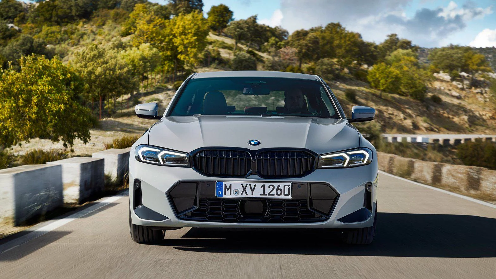

Mahsinalar haqida
Mashina (lotincha: machina — qurol, qurilma) — bir turdagi harakat energiyasini ikkinchi turdagi harakat energiyasiga aylantirish ,
materiallar yoki axborotlarni oʻzgartirish, aloqa oʻrnatish, yuk va odamlarni tashish uchun moʻljallangan mexanizm yoki mexanizmlar majmui.
Jamiyatdagi ishlab chiqarish kuchlarining eng muhim tarkibiy qismi, yirik mashinali ishlab chiqarishning moddiy negizi,
aloqa va transportning asosiy vositasi hisoblanadi.


M. yaratish borasidagi urinishlar edi. Shuning uchun ilgari M. inson mehnatini osonlashtiradigan mexanik tizim deb tushunilgan.
Bora-bora u insonning aqliy mehnatini va fiziologik vazifasini ham bajaradigan murakkab tizimga aylandi.


M. umuman ijro mexanizmi (ish M.si), qarakatlantirish mexanizmi, uzatish va nazorat-boshqarish qismlaridan iborat buladi.
paxta terish M.siniki — shpindellari va hokazo, velosipedning harakatlantiruvchi qismi uning pedali,
Mas, tikuv M.sining ijro mexanizmi uning ninasi, yulduzcha va zanjirlari, avtomobilning nazorat-boshqarish qismi rullari va turli asboblari (tezlikni, bosimni va boshqalarni kursatadigan asboblar)
dir. M.ning energetik, ish va ax-borot (informatsiya) xillari bor.


Axborot M.si (informatsiyey M.) maʼlumotlarni qayta ishlab uzgartirish, yaʼni mashina tilita nr
oʻtkazish va standartlashtirish, uzatish, dasturlar tuzish va boshqa yumushlarni oʻz ichiga oladi
(qarang Kibernetika). Buning uchun M.lar majmui, avtomatik, informatsion va kibernetik jihozla
rdanfoydalaniladi (yana qarang Mashinasozlik, Mashinashunoslik, Mashina va mexanizmlar nazariyasi).